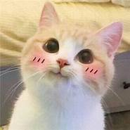
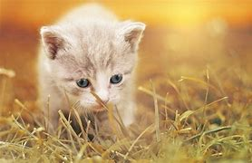
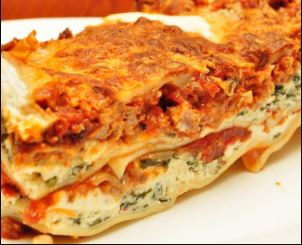
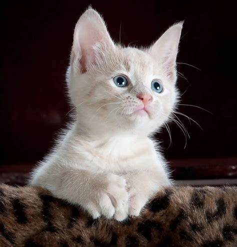

Diseño de fotografía para gatos
fotos para gatos
Ver más
fotografías de gatos
en nuestra galería.
1 lista de jugetes de gatos gatos
Ratones de juguete
Bolas:
Juguetes con hierba gatera:
Galeria de gatos
 
los gatos ma lindos
fotografías de gatos de nuestra galeria
2 comida de gatos
Los gatos aman la lasagna

Comida cruda:
Snacks y golosinas
Comida húmeda
Comida seca
3 cosa que odian los gatos

Tratamiento de pulgas
Truenos
Otros gatos
Los gatos
odian
a otros gatos.
Formulario de gatos
Enviar
¿Es tu gato interior o exterior?
Dentro
interior
Al aire libre
¿Cuál es la personalidad de tu gato?
Cariñoso
Perezoso
Energetico
pelicula del gato con botas
video del gatos